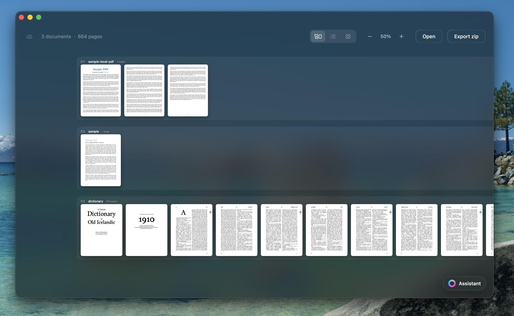
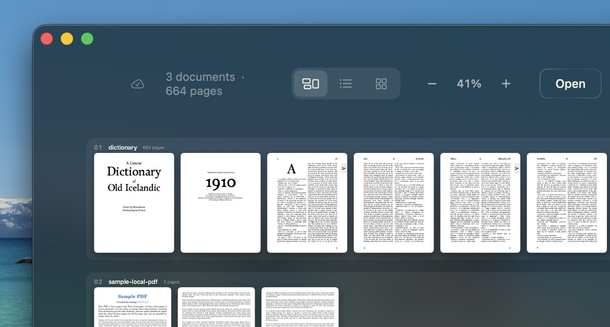
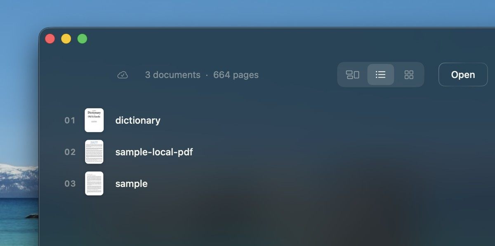
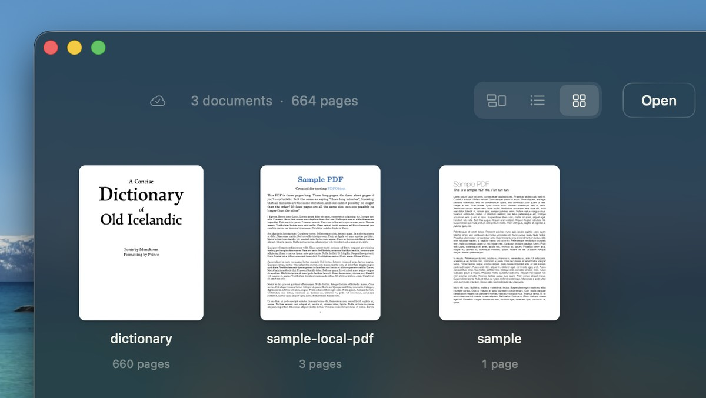

Sheaf lays every document out as a strip of real, readable pages on one plane you pan and zoom. It copies them into a library of its own, so closing the app — or deleting the originals — costs you nothing.

The canvas is the point of the app and it is what opens. But a canvas is the wrong tool for renaming eight files in a row, so the same library is also a list and a grid. They are views, not copies: fold a folder in one and it is folded in all three.



Five things, stated plainly.
.sheaf package, content-addressed,
so importing the same file twice costs nothing and moving the original to the
bin costs nothing either. There is one library, opened at launch and saved on
its own. No save dialog, ever.
⌘F searches the whole library, not the document you happen to have
open, and scans are read with Vision so a photographed page is findable too.
Free, notarized by Apple, and self-updating once it is installed.